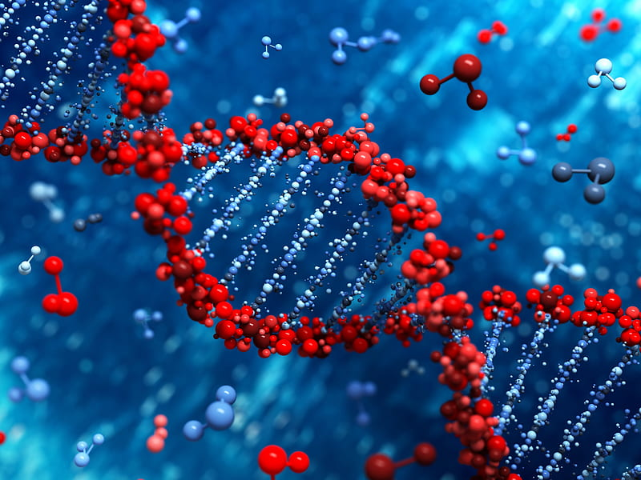
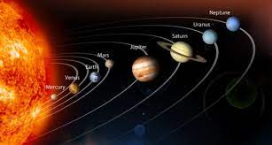

What is science?-Understanding Science
~Understanding Science
What is Science?
The word "science" probably brings to mind many different pictures: a fat textbook, white lab coats
and microscopes, an astronomer
peering through a telescope, a naturalist in the
rainforest, Einstein's equations scribbled on a chalkboard, the launch of the space shuttle,
bubbling beakers.... All of those images reflect some aspect of science. But none of them provides a full picture because science has so
many facets: More
Science: Scope, Existence, and Uses
Scope of Science
Science encompasses the systematic study of the natural world through observation, experimentation, and analysis. It covers a broad range of disciplines, including physics, chemistry, biology, astronomy, geology, and more. The scope of science extends from understanding the fundamental laws that govern the universe to exploring the intricacies of living organisms. Know More
Existence of Science
Science has been an integral part of human existence for centuries. It has evolved through the contributions of numerous scientists and thinkers across different civilizations. From ancient Greek philosophers like Aristotle to modern-day researchers, science has been driven by curiosity, the desire for knowledge, and the need to understand and improve the world we live in. Know More
Use of Sceince
Science plays a crucial role in various aspects of our lives:
1. Advancing Technology

Science drives technological advancements that shape our modern world. From smartphones to medical devices, from renewable energy sources to space exploration, science enables innovation and improves our quality of life.
2. Solving Global Challenges

Science helps us understand and address pressing global challenges such as climate change, pollution, and resource depletion. Through scientific research and evidence-based solutions, we can work towards a more sustainable future.
3. Improving Health and Medicine

Science plays a vital role in healthcare and medicine. It enables the discovery of new treatments, vaccines, and medical technologies, leading to improved diagnostics, disease prevention, and overall well-being.
4. Enhancing Agriculture and Food Production

Scientific advancements in agriculture contribute to increased crop yields, pest control, and sustainable farming practices. This helps to ensure food security and support growing populations worldwide.
5. Understanding the Universe

Science enables us to explore and understand the vastness of the universe. Through astronomy and astrophysics, we unravel the mysteries of celestial bodies, the origins of the cosmos, and our place in the universe.